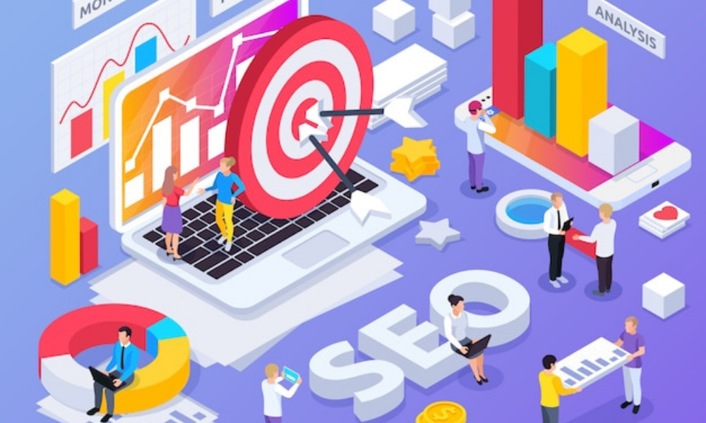

Everything You Need To Know
myblog
Subham Kumar
webdesign, webdevelopment, IT industry

12 May, 2022


How to rank website on first page ?
For those in the business of trying to drive organic traffic, Google is the all-powerful. It crawls the web, determining which pages are the most useful and relevant for its users for virtually any topic. We don’t just trust Google’s results, we rely on them.
With such immense power and influence, getting your small business on the first page of Google might seem unrealistic, However, it this very power Google holds that makes it more possible than ever for small and local businesses to rank high in search results—for free!
In this post I’m going to cover several tangible actions you can take to help your business rise to the top of the first page, using two free strategies: website optimization and listing optimization. I will first cover the importance of the first page of Google and then get into the tactics, which include:
- Adding keywords to specific places on your website
- Creating content for humans, not Google
- Emphasizing location
- Regularly updating and maintaining your Google listing
- And many more
It’s abundantly clear that the first page of Google is a worthwhile (if not essential) goal for any business, but let’s first go over its specific benefits, as this can help you prioritize within your business’s strategy.
Why the first page of Google is important
Google’s search results are getting more robust— with Knowledge Panels, answer boxes, expandable related questions, local results, and more. With so many ways to stand out, working for top ranking is well worth the effort, especially considering that traffic and click-through rate both fall off precipitously as one works their way down the search results.
Traffic and engagement falls off precipitously after the first few results.
Getting on the first page means significantly higher click-through rate
It’s a known fact that the first page of Google captures the majority of traffic, but did you know that there are significant differences in click-through rates for the top vs bottom results? One study shows the following click-through rates by Google position:
• First result: 36.4% clickthrough rate
• Second result: 12.5% clickthrough rate
• Third result: 9.5% clickthrough rate
CTR continues to decline, down to 2.2% for the 10th result (there are usually 10 organic results max per page, even less now with local results, ads, answer boxes, and other new features. If you’re not at the top of Google search results, you are missing out on a lot of clicks.
Get immediate exposure
Top results for Google searches now also populate “Position Zero” answer boxes, otherwise known as featured snippets:
Earning a top spot on Google could lead to getting featured in a featured snippet, granting your business immediate exposure and increasing your credibility.
Top position traffic share
Another study found that the top result on Google captures 33% of search traffic. The closer to the top you can get your website to appear on Google, the better your search presence and brand authority.
How strong is your SEO and online presence? Find out in 90 seconds with our free website grader!
How does first-page ranking benefit your business?
It’s important to understand the different goals that getting a top ranking on Google can help your business to achieve.
1. Improve your visibility
Let’s say you have a brick-and-mortar location. If you had the choice between putting your business on the main road that goes through town or a quiet side street, which one would you choose? The main road, of course.
With 167 billion searches per month, getting on the first page of Google is like planting your business on the busiest road in town. The more people that see your website, the greater your brand awareness. The more familiar consumers are with your brand, the more receptive they will be to conversion activities.
2. Generate more leads
Now what if you had to choose between the main street of a diverse town or a town of ideal customers? There are as many Google first pages as search queries out there. Your goal is to get on the first page for queries that your ideal customers are performing. By doing so, you get discovered by consumers that are searching online with the intent to buy or engage. These people are the most likely to convert into leads and customers for your business.
3. Increase engagement
According to Adweek, 81% of shoppers conduct online research before buying, and Google is the go-to for this. With answer boxes, the “People also ask” section, and local results showing contact information, maps, reviews, ratings, and descriptions, Google’s search engine results page alone enables consumers to learn about, compare, and engage with your business before even clicking on your result.
A People Also Ask section.
4. Drive website traffic
Snippets and answer boxes can only provide so much information. While a search engine results page itself can sometimes supply all the information a person needs, there are still a number of queries for which people will inevitably click through to a website. Don’t forget that it often takes several engagements with a business before a person converts into a customer, so interactions with your website are important.
Not only does being on the first page of Google drastically increase traffic to your website; not being on the first page of Google has a huge disadvantage. In fact, the first page of Google captures at least 71% of web traffic (some sources say up to 92%), and the second page is far from a close second: It drops to 6% of website clicks. This steep decline in web traffic is an indicator of just how important the first page of Google is.
4. Increase your industry authority
Getting on the first page of Google requires regularly creating high-quality content that Google recognizes is satisfying the needs of its searchers. This takes time, but the increased traffic and trust that will result is well worth the investment.
In addition, writing regularly about your industry and business will require you to stay in tune with what your target audience wants to know as well as what the latest updates are in your industry. Appearing on the first page of Google is important because it facilitates the development and maintenance of a robust knowledge base upon which your business can firmly stand.
5. Earn trust
Google’s algorithm is designed to recognize spammy, suspicious, and low-quality content. If you’re consistently showing up on the first page of Google, it means that Google recognizes you as a trusted source of information, and consumers trust businesses that Google trusts.
6. Build your audience
As mentioned above, getting on the first page of Google requires creating high-quality, evergreen content. This type of content is the gift that keeps on giving; it can be repurposed and redistributed across a variety of marketing channels including social media, email, and paid ads.
Your content-driven efforts to get on the first page of Google will provide you with more material and more opportunities to engage with your target audience, nurture leads, and stay top of mind.
7. Speed up your sales cycle
Consumers today have so many options to choose from, as well as access to all the information and tools they need to discover, vet, and make a decision about a business. Where do they go to kick off their research? Google! Getting on the first page of Google helps you to bring in those top-of-funnel leads and get your sales cycle in gear.
How many different ways can you get on the first page of Google for free?
Getting on the first page of Google is not only a common goal among small business owners, but also a very feasible one. Google is not focused on quantity, but quality. As a result, a larger company or bigger budget does not equate to top rank. There are several factors behind Google’s algorithm and, thanks to the fact that Google’s results page has many different components, there are also different types of media that can achieve first-page status. They include:
• Blog posts and website pages (in organic results)
• Your Google My Business account (in the local/maps section)
Optimizing your Google My Business listing ensures your business and its ratings show up for local queries.
• Snippets of your website content (in Google’s many search results page features including “People also ask” and the answer box.
• Your landing pages (This is via the paid ads section, which is not free, but still worth mentioning. For more help with using paid strategies to get on the first page of Google, head to this post on Google Ads tutorials.)
Now let’s get back to the two free mediums by which you can get to the first page.
How to use your website to get on the first page of Google
The practice of aligning your website with search engine ranking factors is called >search engine optimization (SEO). You do not necessarily search engine-optimize your whole site at once, but rather each individual page on your site. Here’s how to do so:
1. Determine your keywords
First, determine which search queries you want Google to answer with your website pages. These are known as keywords—which, by the way, can be single words OR phrases.
Examples of keywords include:
• “MA tenant laws”
• “salon near me”
• “brunch Boston”
• “air conditioner repair Brighton”
• “how to plug a leaky roof”
• “how to get on the first page of Google”
Each page on your website should target a different set of keywords so that the pages aren’t competing with each other.
The right keywords for your business are those that your ideal customers are typing in to get the products and services they need. For help choosing keywords for your business, try our Free Keyword Tool.
Use our Free Keyword Tool to find high-volume keywords for your niche.
2. Tell Google what keywords you’re using
Google works by crawling the web, ranking the millions of pages that exist, and storing them in an index. When a user performs a search, Google can then scan through its more organized index (rather than the whole web) to quickly come up with relevant results.
Therefore, another important step for showing up on the first page of Google is to make it as easy as possible for Google to scan, index, and retrieve your site. Do this by placing keywords in the following places:
Meta title
Every blog post and page of your website has a meta title. This title appears at the top of your page in the form of a header but also as the title of that page’s listing in search results (depending upon your CMS settings).
Meta description
The meta description is the little blurb that shows up underneath the title in Google’s search results.
In addition to telling Google what your page is about, the meta description quickly tells a searcher what they can expect if they click on your page, increasing the relevant clicks to that page. Therefore the meta description helps Google to put your business on the right first page for the right searches and helps Google searchers to keep it there.
URL
Your URL consists of your domain name (such as wordstream.com), followed by a forward slash, followed by text separated by dashes.
Including keywords in your URL will help Google more quickly identify what your page is about. Also, the URL appears in between the title and meta description in search results. A clean URL that matches the title of the page is more appealing and trustworthy to users, and better suited for first-page appearances.
Alt tags
Google can only see images if the image has a text alternative (aka alt tag). If your alt tag includes keywords, Google can detect further relevancy of that page and feel more comfortable putting you on its first page of search results.
3. Write for humans
Of course, the body of your page’s content is the most important place to include the keywords for which you’re trying to rank. However, it is crucial that these keywords are not systematically and excessively inserted but naturally incorporated. In fact, Google can now detect keyword stuffing and if it does it will place you far, far from the first page of its results.
The key to getting on the first page of Google is providing useful, trustworthy, easy-to-read, but informative content that will keep your target audience on your pages and coming back for more. And conversationally sharing the knowledge already in your head is both free and easy. Just remember that if you want to rank on the first page of Google for a particular keyword search, your page needs to provide the information, and not just the keywords, that users are trying to obtain when they type that search into Google.
4. Emphasize location
Another free way to get your website pages on the first page of Google is to target location-based queries. Make sure your website clearly indicates your city and/or geographic area, via your contact page and potentially also through blog posts and services pages. That way, when people search: “your industry” + ”your city”, Google will pick up that information and show your business as a “near me” search result.
Even if a user does not search using a specific location, Google will still serve up geographically relevant results based on their IP address, so local SEO is not only free, but always important (even during a pandemic).
5. Optimize for mobile
You will not find a website at the top of a Google search that is not responsive. Consumers now use phones and tablets more than computers and laptops, and the majority of local searches are performed on mobile devices. As a result, Google favors mobile-friendly websites. In fact, all sites are now indexed by mobile-first indexing.
Responsive is ideal, as your website will adapt to any size screen and maintain functionality. However, if you don’t have a responsive website, there are adjustments you can make to your site to ensure the most seamless experience for a mobile user.
6. Focus on user experience
Being mobile-friendly isn’t enough for a website. It must also be appealing and user-friendly. A website with intuitive navigation, clear calls to action, and answers to your visitors’ most immediate questions will keep visitors there longer and coming back later—which Google will notice and, in turn, rank you higher. The higher you rank, the more traffic you will get to your site, and the more likely you are to show up on the first page.
To optimize every aspect of your website, check out our Ultimate Website Audit Checklist (with an Epic 6-Tab Google Sheet).
How to use your business listings to get on the first page of Google
In addition to your website pages, your online business directory listings can also show up on the first page of a Google search. Here’s what you need to do:
7. Create a Google My Business account
Google My Business is evolving into one of the most powerful (not to mention free) tools for local business owners. Both Google Maps and Search pull from Google My Business to produce local listings (known as Business Profiles). Creating a Google My Business account is a fast and easy way to add more information to your Business Profile, which helps it to to appear on the first page of Google Maps and Search (in the ocal results section)h. Make sure you follow through with claiming and verifying your listing so that you can monitor, maintain, and optimize your listing.
8. Optimize your Google Business Profile
Speaking of optimizing your listing, I consider this strategy a separate entity because while creating a Google listing can help you with your visibility, it can only take you so far in terms of ranking. Rather than creating a bare-bones listing and hoping that it shows up for one or two searches, optimize your Google business listing for maximum visibility. Here’s how:
Complete every section of your profile
The more information you include in your Google My Business listing, the more searches for which it can show up on the first page. In fact, complete Google My Business listings get, on average, 7X more clicks than incomplete listings.
Keep your name consistent
Use the same exact name for your business at all times. Google doesn’t like discrepancies—even those as minor as “Co.” vs “Company”
Update your information
Not being able to find your business, showing up to find it closed, or getting an operator when trying to call can not only deter a customer, but also lead them to distrust your business or write a negative review. Stay on top of your Google listing and make the necessary updates and changes so that it can be trusted enough to be at the top of the list.
Upload photos to your listing
Google My Business strives to equip consumers with as much information about a business as possible, before even encountering that business. This includes what it’s like to be at that business, so be sure to upload photos that depict not only the products and services your business offers but also the atmosphere and people that frequent it.
Try our Google My Business Grader
We have a free tool designed specifically for Google My Business listings. Simply log in with your Google business account and in less than 30 seconds, you’ll get an assessment of your profile and learn what you need to do to get closer to the first page.
9. Obtain customer reviews
Google searchers love to see what other people think about a business, so it’s no surprise that the businesses with more positive Google reviews show up on the first page. Ask customers in person and create a review shortcut link so you can easily encourage reviews across your online channels. While this technically falls under the list of Google My Business optimizations, don’t forget that there are plenty other review sites—all of which have an impact on your ranking.
Reviews can land you in the “Local Pack” which shows up at the top of Google’s SERP.
10. List your business on other directories
Google My Business is powerful, but you should still create and optimize listings on other popular directories like Yelp. First, because Yelp has high traffic and is widely trusted by Google, so your business’s Yelp page can very well show up on the first page of Google for relevant searches. Second, because a solid listing with positive reviews improves your online presence in general. Online review and links from other trusted sites send signals to Google that figure into its ranking algorithm.
As with your Google Business Profile, make sure the rest of your online directory listings are complete and accurate, consistent across platforms, updated, and that you are collecting and responding to reviews. Don’t forget to add photos to your online listings as well.